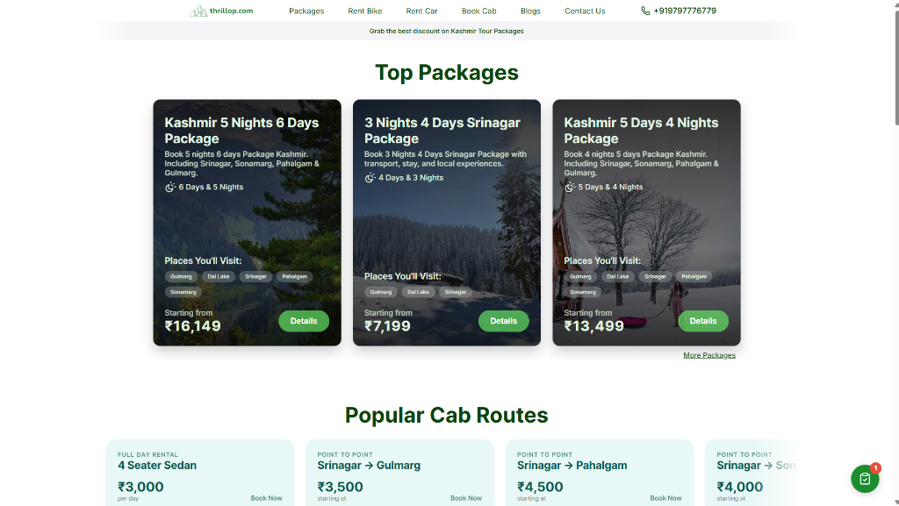
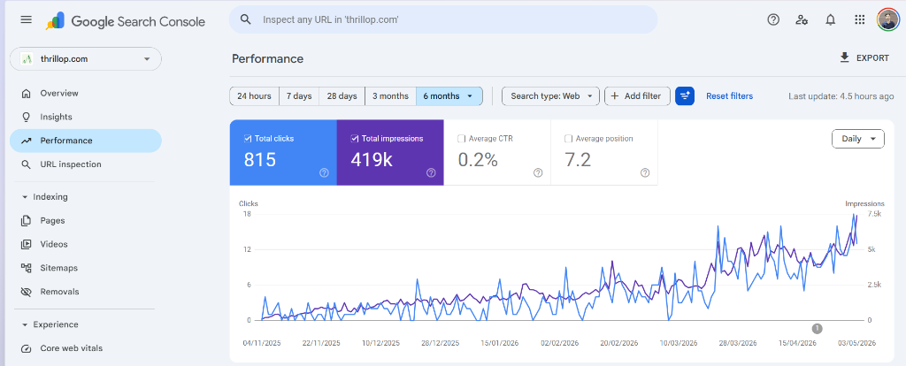
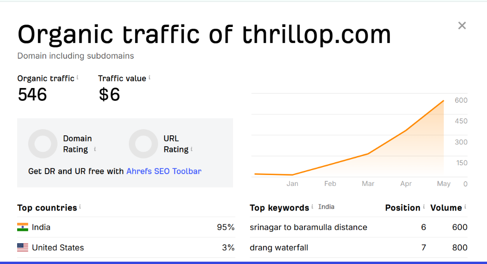

Thrill Top Journeys
Thrillop came to me as a brand new website with zero traffic, no rankings, and no content. Built the entire SEO foundation from scratch, keyword research across Kashmir travel queries, on-page optimisation for all service and package pages, technical setup including tracking via GSC and GA4, and a content strategy built around high-intent travel keywords. Published SEO-optimised blogs consistently targeting long-tail Kashmir travel queries. Within 6 months, organic impressions grew from ~2K to 424K and clicks increased by 740% — from 99 to 832 monthly clicks — with average position improving from 10.3 to 7.2.
Travel Niche · Content Strategy · On-Page SEO · Website Development